Underwater Acoustics

This section covers my undergraduate research work in underwater acoustics. I was selected for the Marine Physical Laboratory internship in the summer of 2023 at the Scripps Institution of Oceanography at UC San Diego. I joined the Scripps Whale Acoustics Laboratory under Dr. Joshua Jones and Prof. John Hildebrand, and my first project was on automatic signal detection algorithms. After the internship, I was hired as an undergraduate researcher and remained with the lab for 2.5 more years. I worked on more signal detection algorithms, signal processing, user-interface development, acoustic data quality control, and hydrophone hardware.
Why Study Underwater Acoustics?
Acoustics are essential to studying biological, geological, and anthropogenic activity in the ocean. Particularly for biological activity: species presence, population estimates, species dynamics are all heavily dependant on studying acoustic signatures. Alternative methods include visual observations, where species dynamics are estimated based on human-observed surfacing behavior, or tagging, where sensors are fixed to animals and record kinematic and oceanographic data. These methods limited as animal behavior extends vastly beyond what can be seen during surfaces, surface events are sparse, and ship time is expensive. Tagging can potentially yield a lot of data, but requires animals to surface, precise tag application, and is limited by battery life. Acoustics are the most fruitful method, underwater microphones, or hydrophones, can be deployed for months to years at a time and record nearly all sounds, including some that have propagated from across the globe.

Graphic displaying sources of underwater noise. Source
The Scripps Whale Acoustics Laboratory focuses primarily on marine mammals, but is also heavily invested in noise created by ships of various types. They, and other labs in the Marine Bioacoustic Research Collaborative have performed studies all over the world: locally in the Southern California Bight, further in the Pacific like Hawaii, the Atlantic ocean, Antarctica, and the Canadian Arctic. The lab developed their own hydrophones in house, they typically record continuously at 200kHz to resolve as many relevant frequencies as possible.
{kind=link}
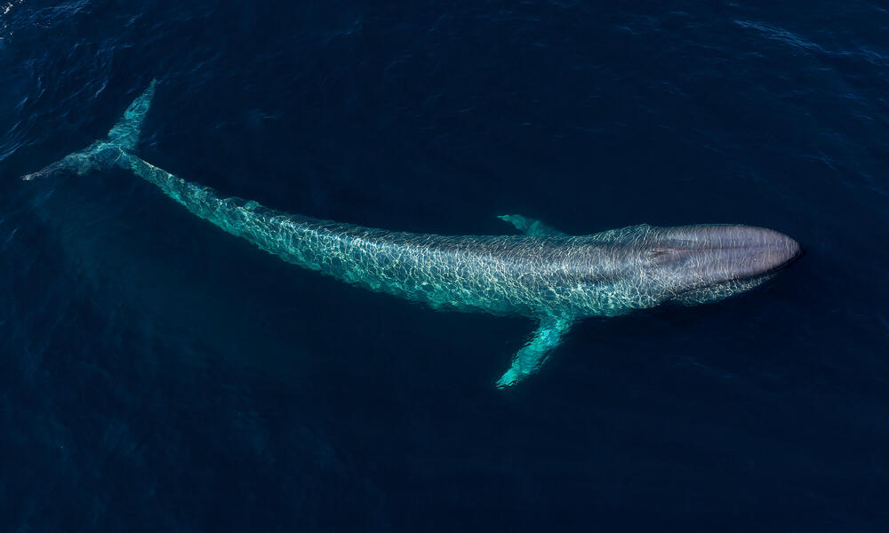
Blue Whale surfacing. Source
My first project focused on low-frequency acoustics for a project where data was collected in the Canadian Arctic. The goal was to correctly identify and isolate certain baleen whale signals that are generally less than 100Hz. The ocean is very loud at these low frequencies, so the signals are caught up in a plethora of shipping, flow, and geologic noise.
Low-Frequency Signals in the Arctic
First, I will outline some examples of signals that are found at low-frequencies in the Arctic. These examples come from summertime months, but during other seasons, particularly when ice sheets cover the ocean, the soundscape is drastically different. I will show spectrograms of acoustic timeseries data, which decompose timeseries data into it's frequency components over a specified chunk of time. Every acoustic signal has a specific pattern in frequency space.
{kind=link}
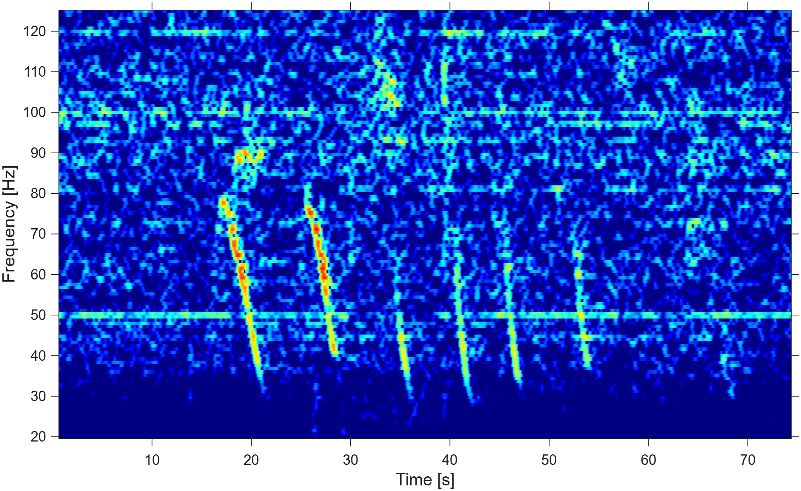
90-30 and 50-30 Hz downsweeps, up to 2 seconds long, typically associated with sei whales.
{kind=link}
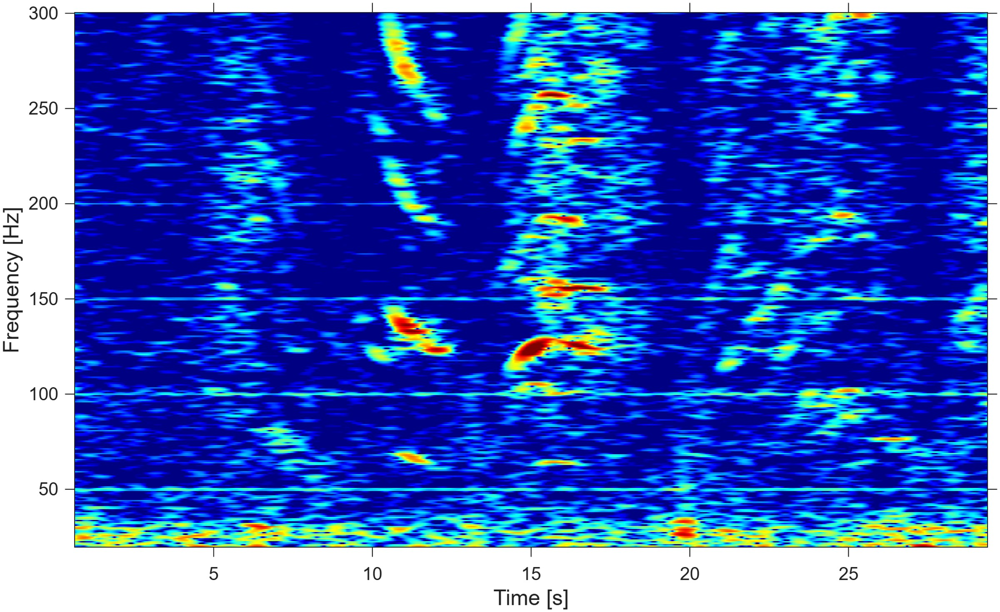
Humpback whale songs, typically in the 100-1500 Hz range.
{kind=link}
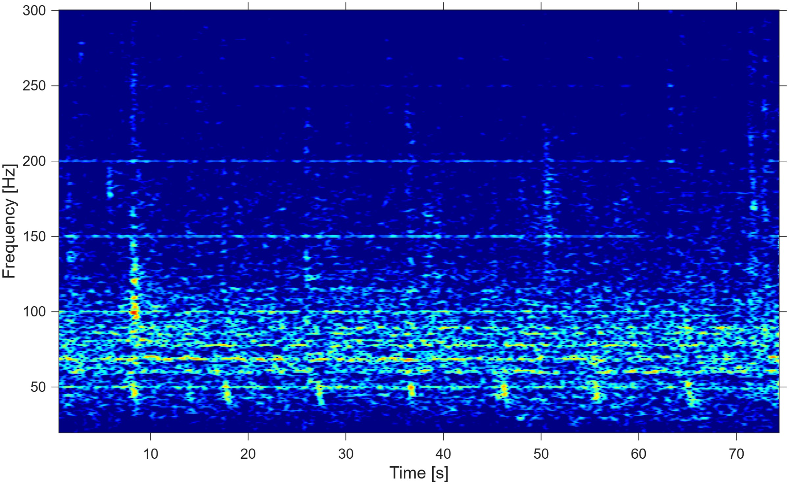
Seismic surveys are short pulses under 50Hz, on nearly perfect intervals. Bands of noise between 50-100Hz are created by electronics on the hydrophone array and block real signals.
{kind=link}
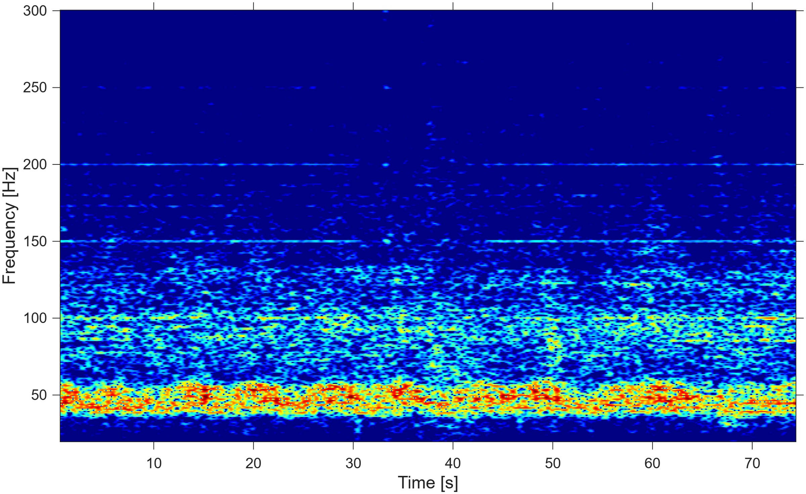
Flow noise created by strong currents interacting with the hydrophone.
{kind=link}
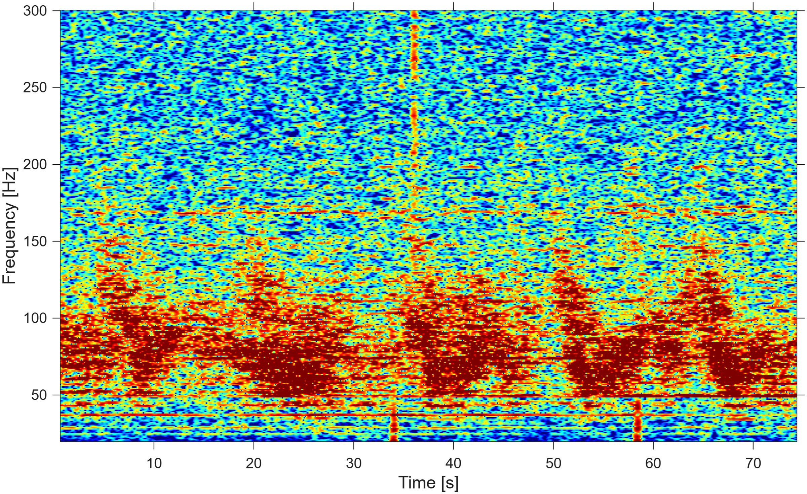
Extreme noise from ships.
{kind=link}
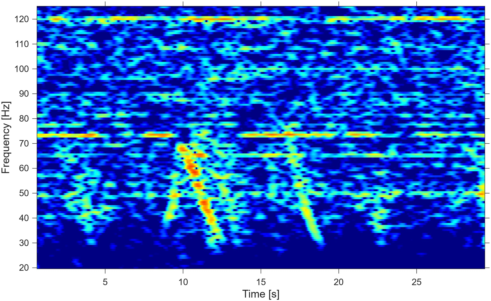
Upsweep and downsweep signals from marine mammals.
{kind=link}
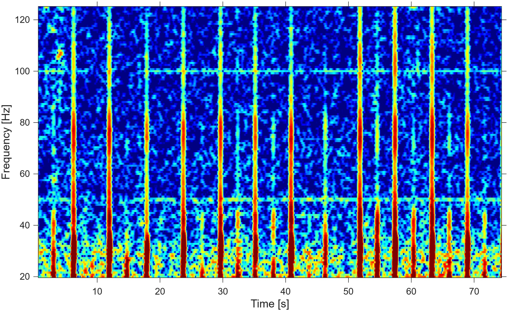
Strumming signals, which are large high intensity pulses. These are made when the mooring line that the hydrophone is attached to oscillates in high currents and physically hits the hydrophone.
These figures show that at low frequencies, the ocean is alive with sound, and most of it is not made from animals. In fact, a lot of it, like shipping noise, completely drowns out the noises made by the animals.
Signal Detection Algorithms
One challenge with processing acoustic timeseries data is how long the deployments are. Deployments oftentimes are roughly 1 year long, and the signals we are searching for are only a few seconds long. So a human analyst would need to go through a year of data essentially minute-by-minute, which is not practical, especially if there are multiple deployments. Instead the lab turns to signal detection algorithms to automatically locate signals of interest.
One of the simplest algorithms is the energy detector. This algorithm scans the data in chunks and searches for spikes in energy, since a biological vocalization would, at its core, be an energy spike at specific frequencies. Energy detectors can look within specific frequency bands and collect data about the spike, which can help narrow down whether or not the detection is a true signal of interest or a false positive.
The algorithm I used was the Generalized Power Law (GPL) detector developed by Tyler Helble and published in 2012. Source. The GPL detector was an energy detector in simplest terms, but the theory behind it is quite complex, and it's performance excelled at detecting humpback whale vocalizations. The idea behind the detector was to isolate data into 75-second chunks, identify a noise floor for the chunk using whitening and a power-law greater than two, and then remove background noise. After the process is finished, the only signals left in the window should be those of interest.
{kind=link}
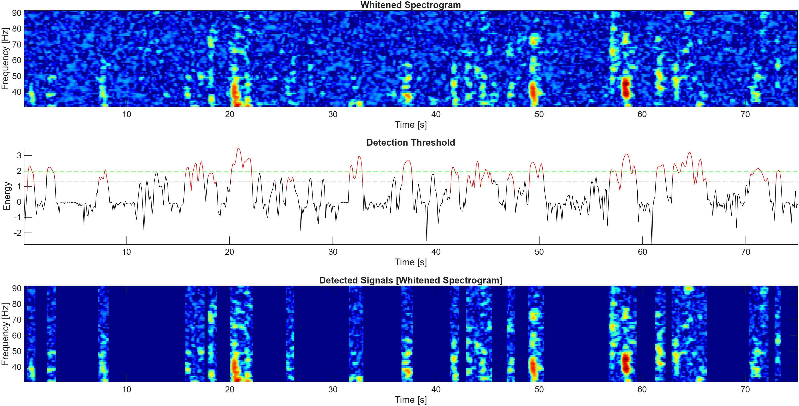
The top subplot shows a spectrogram of one 75-second chunk of data. The GPL detector takes that spectrogram, creates a timeseries pertaining to the energy level in each time bin, then applies a threshold. The middle subplot shows the threshold process. The black line is the noise floor, any values below this are ignored. The green line is the signal detection threshold, any values above this, and down to the noise floor are detections. The bottom subplot shows the spectrogram with only the time regions containing detections are visible.
The detector loops through all 75-second time chunks in the timeseries and logs detected calls. One benefit of this detector is that it can handle differing mean noise conditions due to taking a local noise floor, rather than a fixed one for the whole timeseries. The detector gathers all detections into a list, which then must be analyzed for true positive signals of interest and false positives.
The GPL detector was initially used for humpback whales, and it had a set of parameters designed for those calls. My team was interested in low-frequency baleen whales, so my first task was to adjust parameters, run the detector, and evaluate the performance. I iterated the parameter changes until the detector reached a 98% recall rate on detecting 90-30 & 50-30Hz downsweeps (successfully detecting 98% of all manually-flagged calls).
{kind=link}
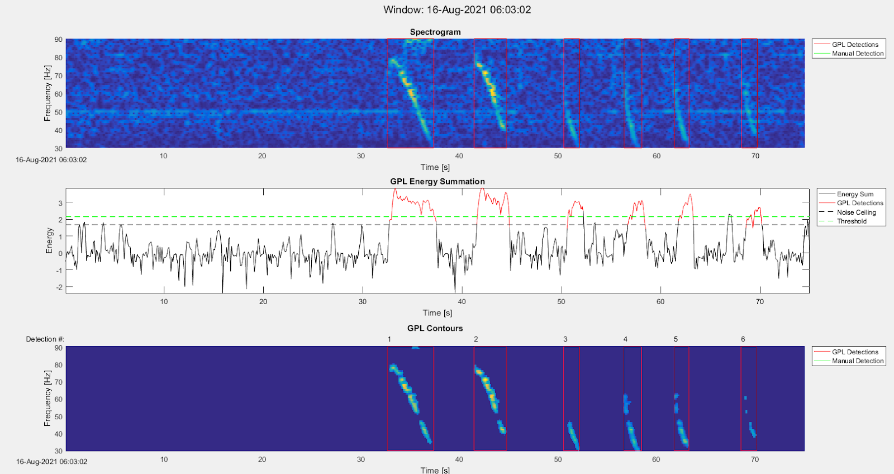
An example of 90-30 and 50-30 Hz downsweeps being detected by the GPL detector. The main parameters that are tuned to identify the calls are the noise floor and detection threshold.
I also was tasked with reviewing and improving the GPL detector MATLAB code. I added documentation, some minor optimizations, and implemented new sections so that the detector is compatible with newer audio data.
I also implemented new functions to the GPL detector. Most of the functions were extra measurement parameters: when the GPL detector locates a call, it performs simple measurements of the call such as duration and frequency bandwidth. I added more measurements, allowing for more robust identification of similar signals in future work.
GPL detector additions:
- Distribution of detections into multiple files.
- Call frequency counter
- Reworked parameter setup
- Added function to remove instrument-made noise (First-in, first-out)
- Added filtering options for calls where the 2D image is too small to be considered
- Added measurements of slope, bandwidth, and duration for calls that contain multiple signal types in one detection
- Added filtering options for multi-call detections
- Added option to compute the RMS received level of the detection
- Added option to compute the sound exposure level of the detection
- Added option to compute peak frequency
- Added option to compute the peak-to-peak received level
- Added options for RMS RL, P2P RL, and SEL to use -3 dB, -10 dB, 90% cumulative energy, and 97% cumulative energy methods for computation
- Compatibility with deck test single duty cycle
Manual Detection Reviewer
The GPL detector struggled greatly when it came to low-frequency signals in environments with high ambient noise, such as the Arctic. In order to successfully identify 98% of all manually-flagged signals (~650 over 2 months of data), it had 3 orders of magnitude more false positives (~500,000). This is not reasonable for a human to analyze, in fact it would be quicker to manually annotate a timeseries without even running the detector. I shifted to a new task, manual detection review of signals that have already been flagged by a human reviewer. The lab had other students that had scanned through timeseries data and recorded signals of interest. However, there was no way to go back through these signals and extract identifying parameters like received level. The GPL detector makes these measurements, but it was only able to do batch detections. I developed a program for users to rapidly review manual detections and extract all relevant parameters.
The program was written in MATLAB and it uses hotkeys for review rather than buttons in a GUI. The program loops over each manually flagged detection, runs the GPL detector over a 75-second window containing the detection, then presents the user with the spectrogram displaying the GPL detections and the manually-flagged detection. The user then selects which GPL detection corresponds to the manual detection.I named the program "GPL Fetch".
{kind=link}
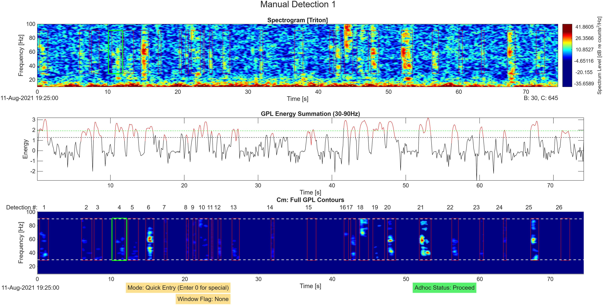
An example of a GPL Fetch window. The top spectrogram shows the 75-second window with detections annotated in boxes. The middle subplot shows the energy summation used to identify detections. The bottom subplot shows only the calls located by the GPL detector (red boxes) and the manually flagged detection (green). At this point, the user simply types "4" into the command window to select the corresponding GPL detection, and moves on to the next window.
GPL Fetch will loop over all manually-flagged detections, displaying the window for review, and saving all relevant parameters for GPL detections that are paired to manual ones. All work is done in the command window, and progress is automatically saved, allowing for pausing and returning later for another session. GPL Fetch is also equipped to handle edge cases, this is called special case mode. If the user comes across an anomaly, they may enter special case mode and record a series of commands.
Examples of special cases that GPL Fetch can handle:
- Single detection (regular) entry
- Single call split into multiple GPL detections
- GPL detector missed the call
- Adhoc detections: option to add more calls in the window
- Switch the manual detection to a new (better) one in the window
- Mark call as a false entry
- Reprocess due to GPL detector missing part of the call
- Reprocess due to call having weak received level
- Flag a false negative: a call in the window is missed by the GPL detector
- Mark a separate call as interesting
- Mark an error that was made while reviewing the current window
- Skip the window for any reason
- Mark a call as undetermined (unsure if it truly is a signal of interest)
- Exit special case mode/continue to the next window
- End the session
- Adjust the spectrogram brightness and contrast: colormap scaling
{kind=link}
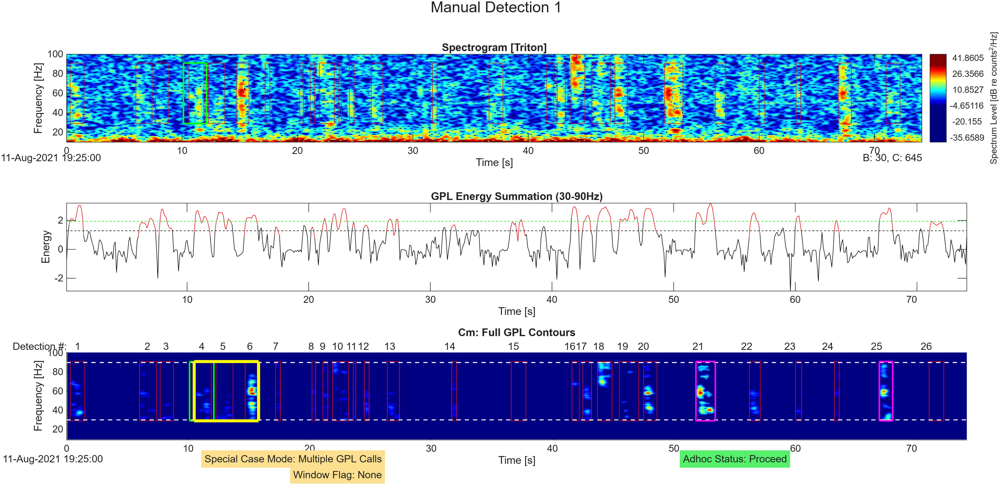
An example of a GPL Fetch window with special cases. The original detection at "4" has been replaced with "multiple detections span current call", and calls 4,5, and 6 are marked. Calls 21 and 25 are added as adhoc detections. All special cases will visually show the user what has been selected.
{kind=link}
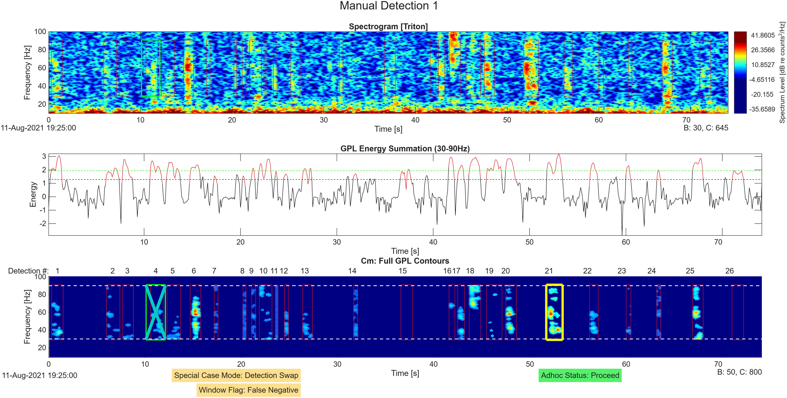
Another example of a GPL Fetch window. This time the manual detection has been swapped for another GPL detection in the window, the window has been flagged with having a false negative, and the brightness & contrast have been adjusted. All of these can be adjusted live while reviewing.
After completing the review process, I wrote more code to process the GPL Fetch outputs, giving the user summaries of call parameters. Each type of measurement is reported in a table withe mean, median, standard deviation, and range. Histograms are also available. GPL Fetch was used by another graduate student in the lab to review over 5,000 fin whale detections and multiple other baleen whales in less than a week.
Hydrophone Mount Testing
The Scripps Whale Acoustics Lab has developed their own hydrophones in house for decades. Part of that system is a mooring line, which the hydrophone is attached to, that connects the floats, ballast, and battery systems.
{kind=link}
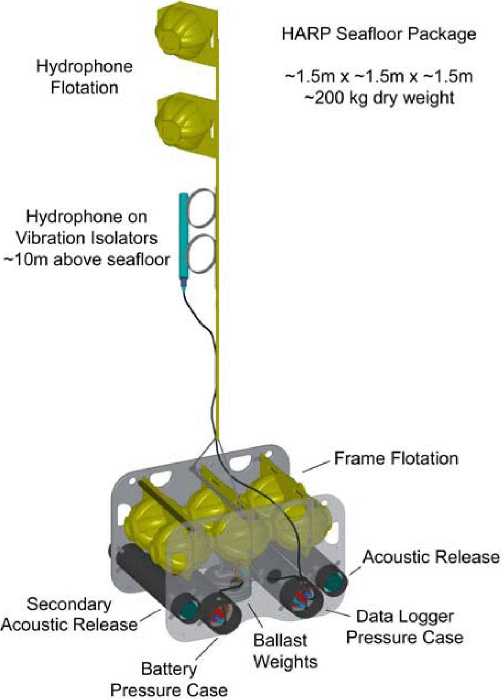
A schematic of the deployed hydrophone line. The hydrophone itself is attached via vibration isolating rings to the mooring line. The vibration isolation rings are designed to prevent watch circle motions from leaving an acoustic signature in the data. Source
In the Arctic, it was found the flow of water was so strong at relatively shallow sites that the vibration isolation rings were not enough to dampen the noise. A new device was designed to keep the hydrophone rigidly mounted without influence of the swaying mooring line. I was tasked with testing this device: the goal was to find unintended sources of noise in the new design.
I designed a series of tests for the testing rig, they involved applying taps and swaying motions to the prototype while live recording audio using the hydrophone. I also used a GoPro to record motion of the hydrophone relative to it's frame. Taps and swaying motions at varying speeds were applied to various parts of the prototype and signatures in the produced spectrograms were analyzed.
{kind=link}
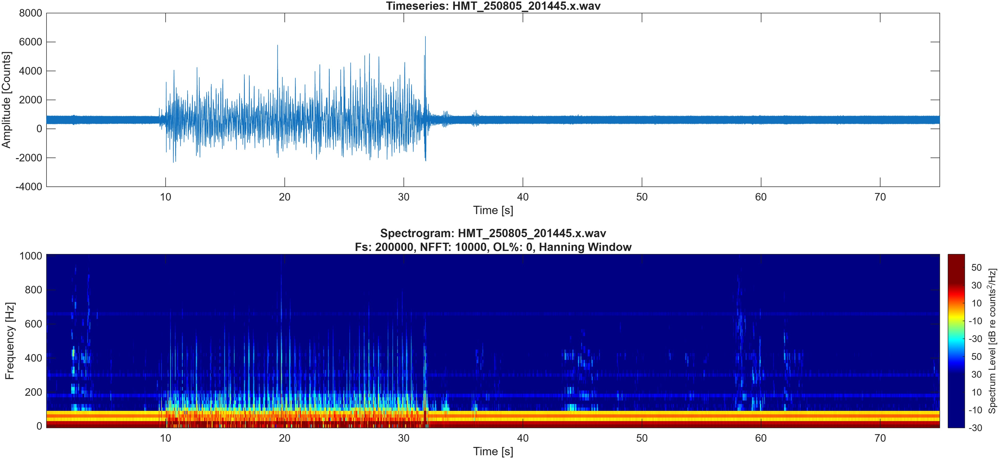
An example of one of the hydrophone mount tests. Swaying was applied to one portion of the mount for a short period of time. The acoustic signatures are viewable in the bottom subplot. Spikes up to 200 and 500 Hz are visible, while all frequencies below 100Hz are whited out.
As mentioned above, a GoPro was used to track relative motions of the hydrophone. I used Kinovea, a kinematic motion analysis program, to process the relative vertical and horizontal displacements of the hydrophone from it's frame. It was hypothesized that there would be a threshold of displacement above which a specific type of internal noise was generated.
{kind=link}
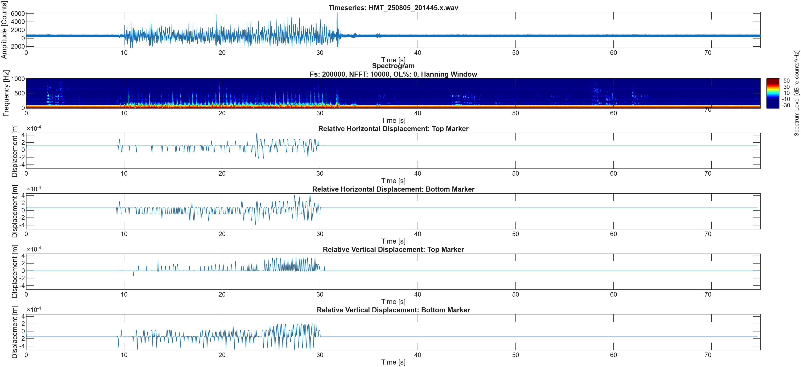
An example of kinematic motion results for one hydrophone mount test. Two markers were placed in the cameras view and were used to track motion. We can see increased amplitude noise when the vertical displacements are larger, as well as wide frequency bandwidth pulses also at the same time as large displacements.
The results of the tests were used to recommend a few small changes to the hydrophone design, specifically with how the cable tether was attached to the mount. There were several limitations, most notably that accurate oceanic conditions were not fully utilized in the tests. Future tests would need to use a water tank with currents applied for a true response.
The prototype was deployed in the field for a short test run. Unintended noise was found in the results when the instrument came back out of the water, namely pulses every second. This contaminated the spectrum and spectrogram with spikes, and blocked any other meaningful signal.
{kind=link}
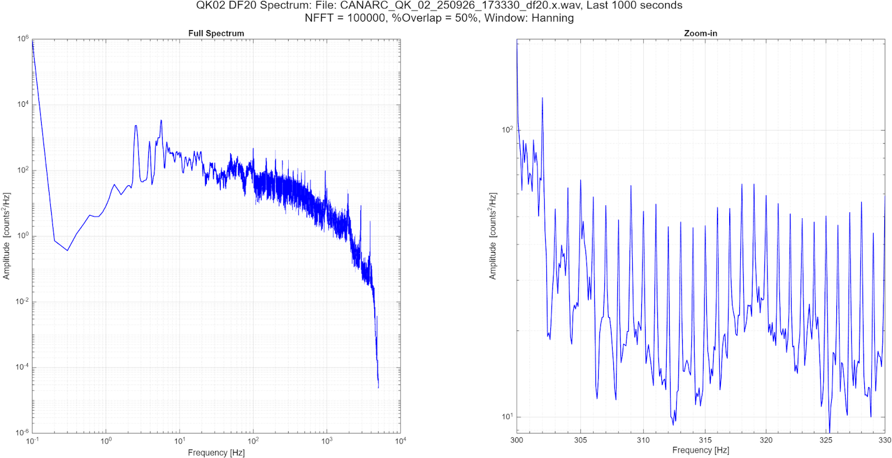
A full test deployment spectrum (left) and zoom in (right) showing pulses at harmonics of 1Hz.
{kind=link}
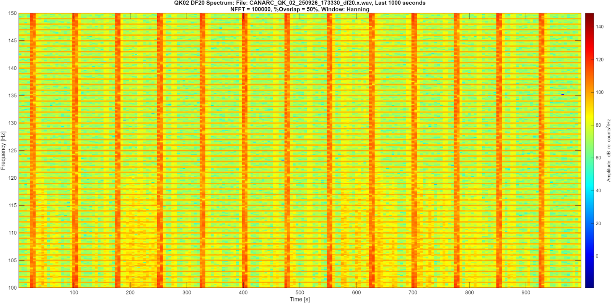
The spectrogram of the same deployment, with 1Hz pulses ruining the image.
I wrote MATLAB code to go through the deployment and search for the pulses, then remove them. This turned out to be a little less simple than hoped, as the pulses actually drifted in time over the course of the deployment.
{kind=link}
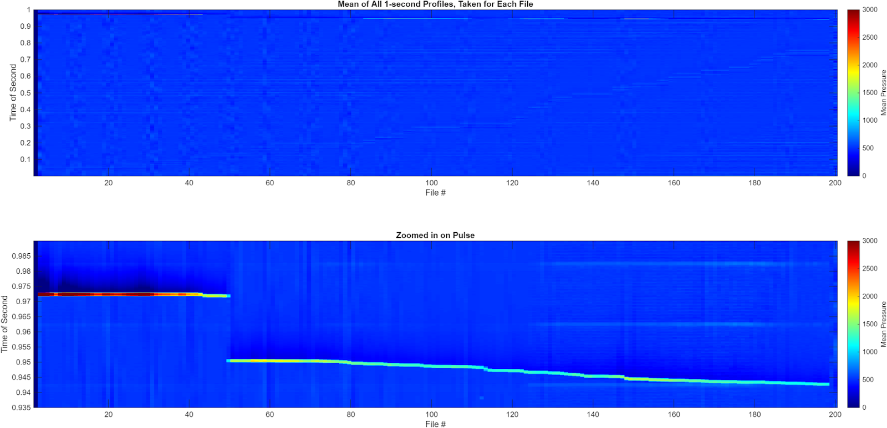
The bottom subplot here shows at what time in the second that the pulses occurred. They were quite short, occurring near the end of each second. They drifted and jumped to be earlier and earlier in the second over time.
After applying my fix to the 1Hz issue, the spectrum was repaired and the data was usable for other projects.
{kind=link}
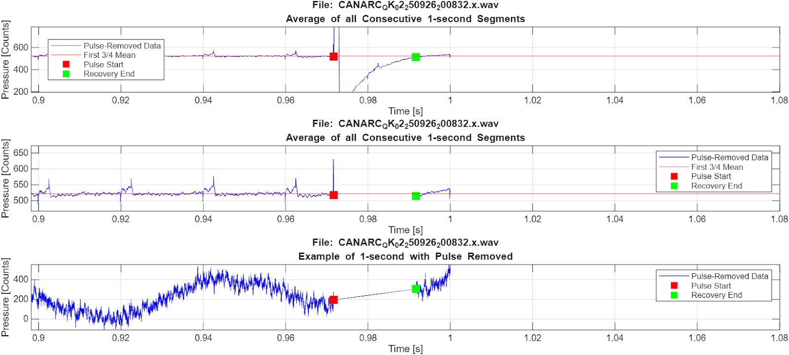
The process of removing the pulses involved locating them in the second, setting a threshold and identifying where the pulses start and stop. The stopping point was challenging since each pulse had to recover back to the original baseline level. After the pulse was removed, the acoustic signal was interpolated through the gap, the safest option since there was no way to know what the true signal was at that time.
{kind=link}
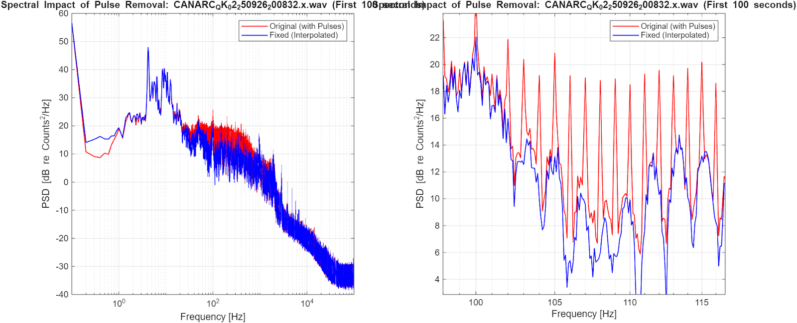
This is what the spectrum looked like before (red) and after (blue) the pulses were removed.
Conclusion
In conclusion, my work at the Scripps Whale Acoustics Lab has involved multiple different projects in the Arctic team and provided me my first research experience. I worked in signal detection algorithms, signal processing, academic method implementation, data quality control, hydrophone prototypes, and worked with a wonderful group of researchers. I am very grateful for time in the lab and especially to my advisor, Josh, for his guidance and support over nearly three years.
Contact & Resume
- Resume: View / Download Resume (PDF)
- LinkedIn: LinkedIn Profile
- Email: icosgrove010@gmail.com
- GitHub: GitHub Profile